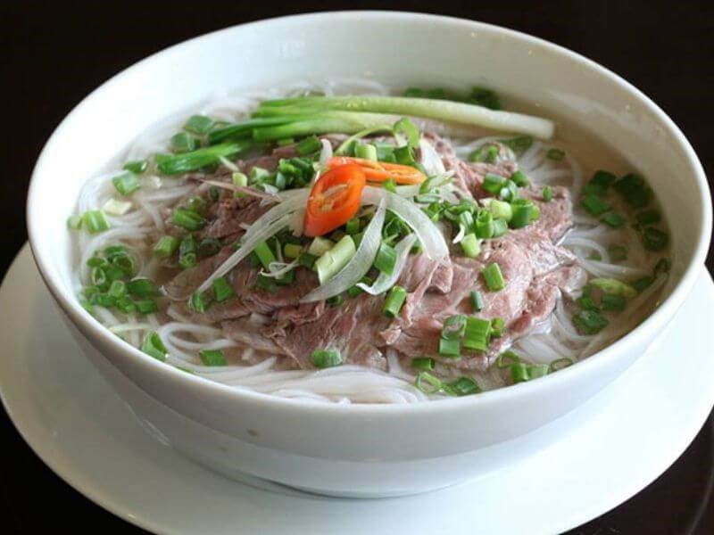
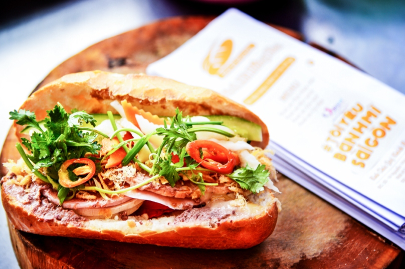
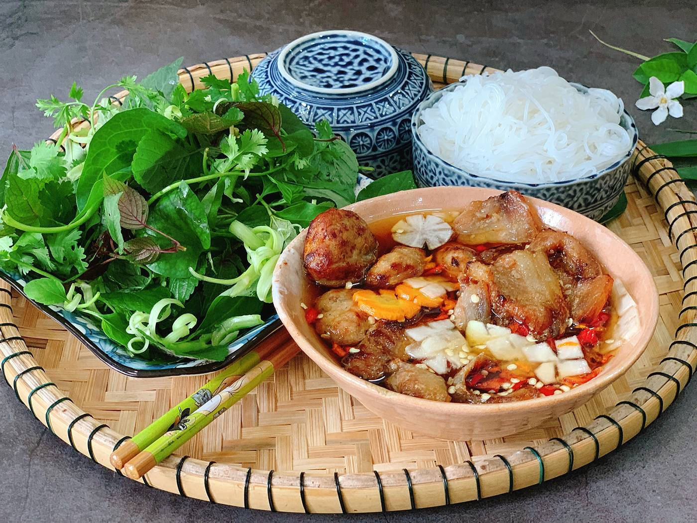
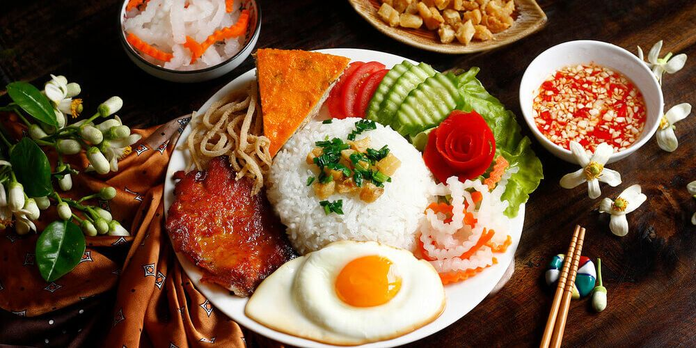

Phở
Phở là một trong những món ăn nổi tiếng nhất của Việt Nam, gồm bánh phở, nước dùng và thịt.

Phở là một trong những món ăn nổi tiếng nhất của Việt Nam, gồm bánh phở, nước dùng và thịt.

Bánh mì Việt Nam kết hợp bánh mì giòn với thịt, rau và nhiều loại nước sốt.

Bún chả là món ăn đặc trưng của Hà Nội, thường được dùng với thịt nướng và nước chấm.

Cơm tấm là món ăn phổ biến ở miền Nam, thường dùng với sườn nướng và nước mắm.